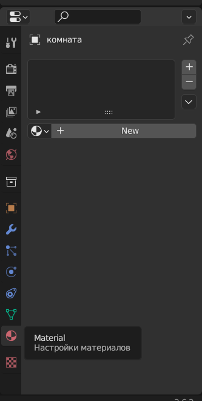
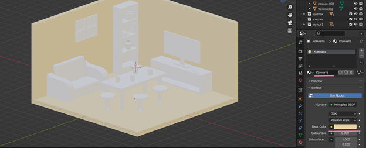
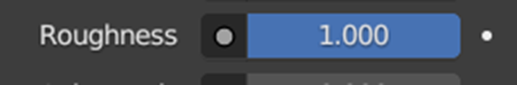
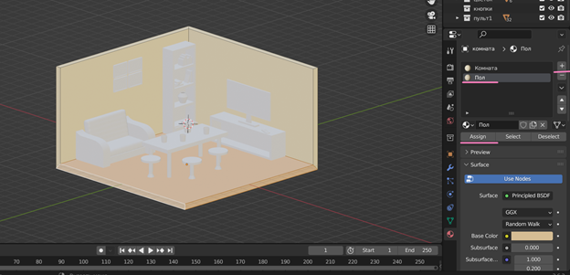
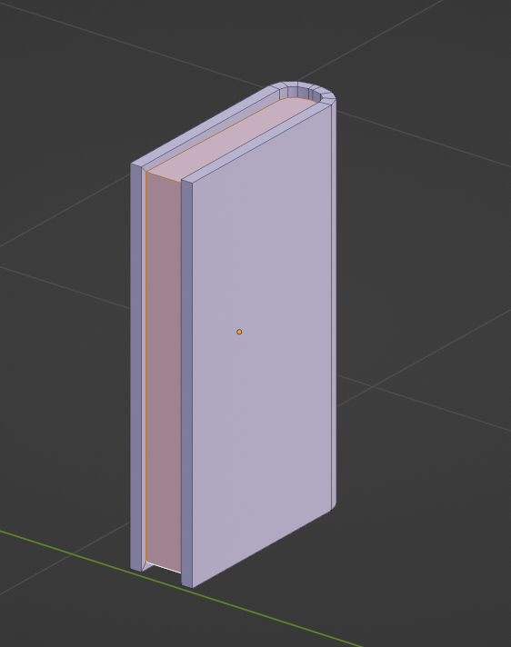
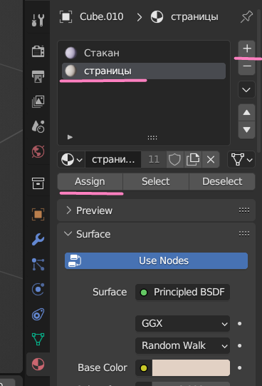
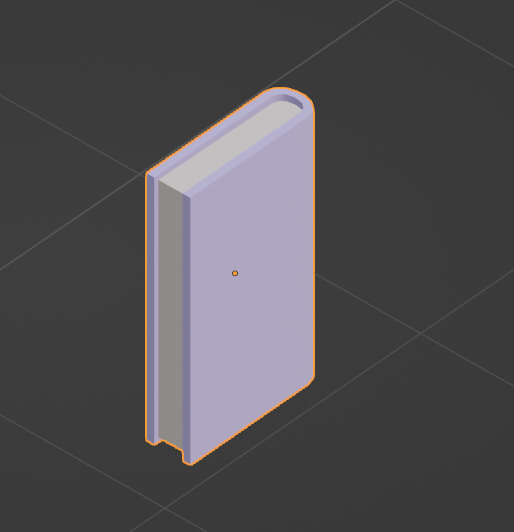
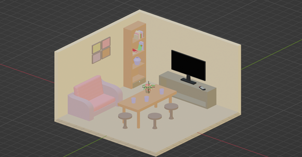

Mirror
Материалы в Blender позволяют моделировать то, из чего сделан объект. Давайте создадим материалы для наших объектов. Для этого выберем режим шейдинга – Material Preview. Новые материалы создаются в разделе Material.

Создадим материал для наших стен и пола, для этого нажмем на кнопочку New.
Зададим название материала и поменяем цвет.

Также поменяем параметр шероховатости, чтобы комната не имела глянцевость.

Можем поменять цвет нашего пола. Для этого создадим новый материал на «+», настроим желаемый цвет. В режиме редактирования выделим грани поля, выберем наш новый материал пола и нажмем кнопочку Assign.

Поподробнее разберем создание материалов для книги. В режиме редактирования граней выберем нужные, которые станут страницами.

Добавим новый материал, подберем нужный цвет и применим его.

Наши странички готовы.

Самостоятельно завершите создание материалов для предметов комнаты. Можете поэкспериментировать и покрутить различные бегунки.
